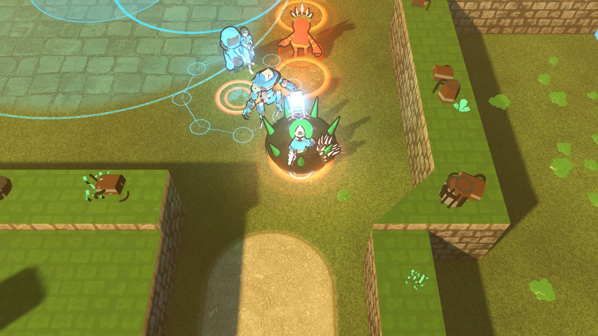
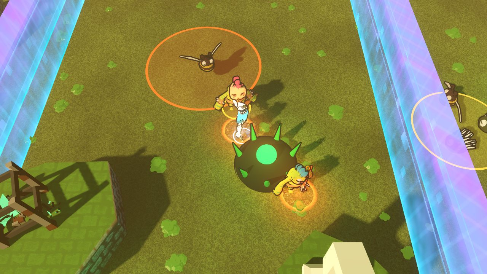
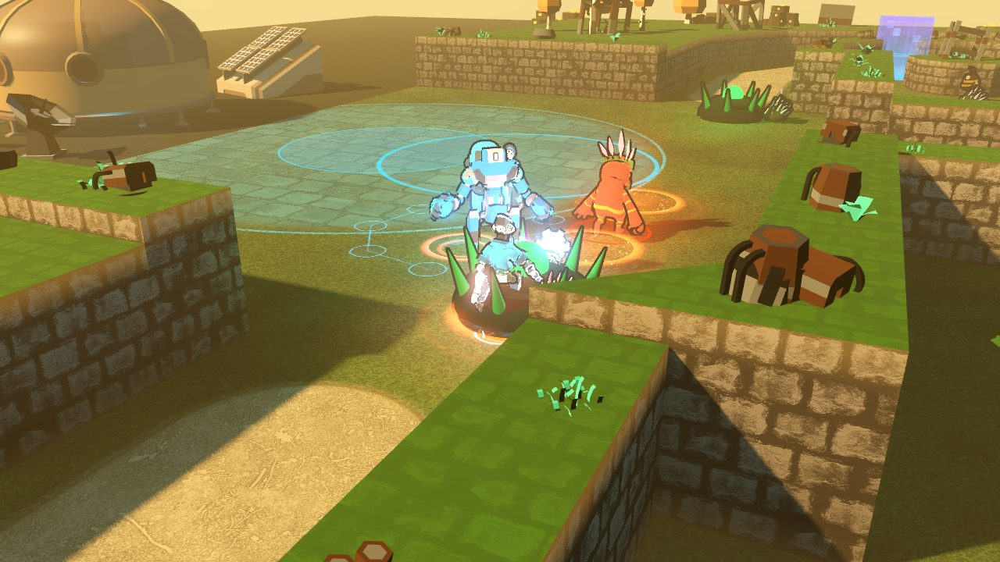
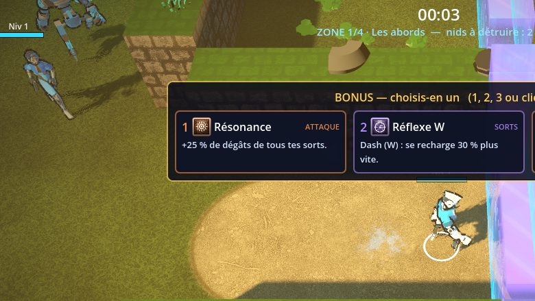

Coop jusqu'à 4Co-op for up to 4
En ligne entre amis : un joueur héberge, les autres rejoignent. Votre héros répond tout de suite, même avec du ping.
Online with friends: one player hosts, the others join. Your hero responds instantly, even with some ping.

Jamais la même FailleNever the same Rift
Chaque partie tire ses nids, ses gardiens, un modificateur par zone (zone sombre, essaim, frénésie…) et l'un des deux boss finaux.
Every run rolls its nests, its guardians, one modifier per zone (darkness, swarm, frenzy…) and one of two final bosses.

Des boss qui s'annoncentBosses that telegraph
Chaque attaque lourde est dessinée au sol avant de frapper : lisez-la, sortez de la zone, ou esquivez au dernier moment.
Every heavy attack is drawn on the ground before it lands: read it, step out, or dash away at the last moment.

Des bonus à chaque étapeBoons at every step
À chaque barrière qui tombe, à chaque gardien abattu : un bonus à choisir parmi trois. Chaque partie construit un autre héros.
Each fallen wall, each slain guardian: pick one boon out of three. Every run builds a different hero.
Le PacteThe Pact
Trop facile ? Choisissez vos malus avant de partir : monstres plus rudes, soins plus rares, compte à rebours… Plus la chaleur monte, plus la victoire compte.
Too easy? Pick your handicaps before you leave: tougher monsters, scarcer healing, a countdown… The higher the heat, the more the victory counts.
L'AutelThe Altar
Victoire ou défaite, chaque expédition rapporte des Braises. À l'Autel, elles deviennent des améliorations permanentes : défier la mort, relancer un choix, repartir plus fort.
Win or lose, every expedition earns Embers. At the Altar they become permanent upgrades: defy death, reroll a choice, come back stronger.